|
|
Off-card verification provides a means for evaluating CAP and export files in a desktop environment. When applied to the set of CAP files that will reside on a Java Card-compliant smart card and the set of export files used to construct those CAP files, the Java Card technology-enabled off-card verifier (“Java Card off-card verifier”) provides the means to assert that the content of the smart card has been verified.
The off-card verifier is a combination of three tools. Use these tools for:
The names of the tools that perform these verifications are verifycap, verifyexp, and verifyrev, respectively. The following sections describe how to use each tool.
The verifycap tool is used to verify a CAP file within the context of package's export file (if any) and the export files of imported packages. This verification confirms whether a CAP file is internally consistent, as defined in Chapter 6 of the Virtual Machine Specification for the Java Card™ Platform, Version 2.2.1, and consistent with a context in which it can reside in a Java Card technology-enabled device.
Each individual export file is verified as a single unit. The scenario is shown in FIGURE 3. In the figure, the package p2 CAP file is being verified. Package p2 has a dependency on package p1, so the export file from package p1 is also input. The p2.exp file is only required if p2.cap exports any of its elements.

Command line usage is:
The file to invoke verifycap is a shell script (verifycap) on the Solaris or Linux platform and a batch file (verifycap.bat) on the Microsoft Windows 2000 platform.
The arguments to this command line are:
|
Argument
|
Description
|
|||||||||||||
|---|---|---|---|---|---|---|---|---|---|---|---|---|---|---|
<export files>
|
A list of export files of the packages that this CAP file uses.
|
|||||||||||||
<CAP file>
|
Name of the CAP file to be verified.
|
|||||||||||||
For a description of the command line options available for
verifycap, see "Command
Line Options for Off-Card Verifier Tools".
The verifyexp tool is used to verify an export file as a single unit. This verification is “shallow,” examining only the content of a single export file, not including export files of packages referenced by the package of the export file. The verification determines whether an export file is internally consistent and viable as defined in Chapter 5 of the Virtual Machine Specification for the Java Card™ Platform, Version 2.2.1. This scenario is illustrated in FIGURE 4.

Command line usage is:
The file to invoke verifyexp is a shell script (verifyexp) on the Solaris or Linux platform and a batch file (verifyexp.bat) on the Microsoft Windows 2000 platform.
The argument to this command line is:
|
Argument
|
Description
|
|||||||||||||
|---|---|---|---|---|---|---|---|---|---|---|---|---|---|---|
|
<export file>
|
Fully qualified path and name of the export file.
|
|||||||||||||
For a description of the command line options available for
verifyexp, see "Command
Line Options for Off-Card Verifier Tools".
The verifyrev tool checks for binary compatibility between revisions of a package by comparing the respective export files. This scenario is illustrated in FIGURE 5. The export files from version 1.0 and 1.1 of package p1 are input to verifyrev. The verification examines whether the Java Card platform version rules, including those imposed for binary compatibility as defined in Section 4.4 of the Virtual Machine Specification for the Java Card™ Platform, Version 2.2.1, have been followed.

Command line usage is:
The file to invoke verifyrev is a shell script (verifyrev) on the Solaris or Linux platform and a batch file (verifyrev.bat) on the Microsoft Windows 2000 platform.
The arguments to this command line are:
Where <export file> represents the fully qualified path of the export files to be compared.
The second export file name must be the same as the first one with a different path. For example,
For a description of the command line options available for verifyrev, see "Command Line Options for Off-Card Verifier Tools”.
The verifycap, verifyexp, and verifyrev, off-card verifier tools share many of the same command line options. The only exception is the -package option which is available for verifycap only.
These options exhibit the same behavior regardless of the tool that calls them.
|
|
Development Kit User's Guide
for the Binary Release with Cryptography Extensions Java Card Platform, Version 2.2.1 |
Copyright © 2003 Sun Microsystems, Inc. All rights reserved.